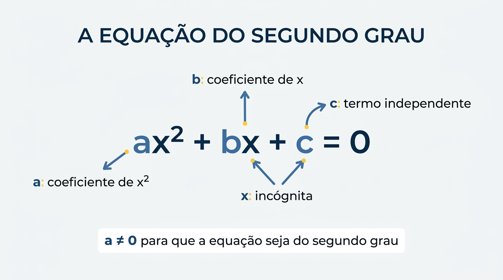

A equação do segundo grau, também chamada de equação quadrática, é uma expressão matemática em que a maior potência da incógnita x é 2. Sua forma geral é: ax² + bx + c = 0.
Nessa expressão, a representa o coeficiente de x², b é o coeficiente de x e c é o termo independente, ou seja, o número que não acompanha a incógnita. Para que a equação seja realmente do segundo grau, o valor de a deve ser diferente de zero.
O objetivo é encontrar os valores de x que tornam a igualdade verdadeira. Esses valores são chamados de raízes ou soluções da equação e podem ser encontrados por diferentes métodos, incluindo a Fórmula de Bhaskara.
